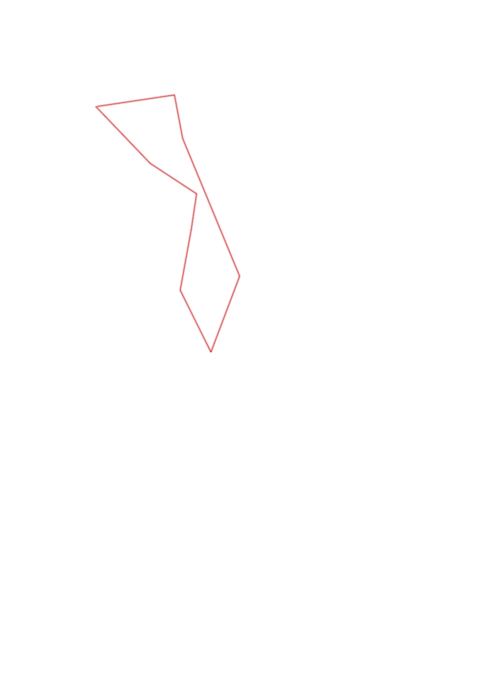
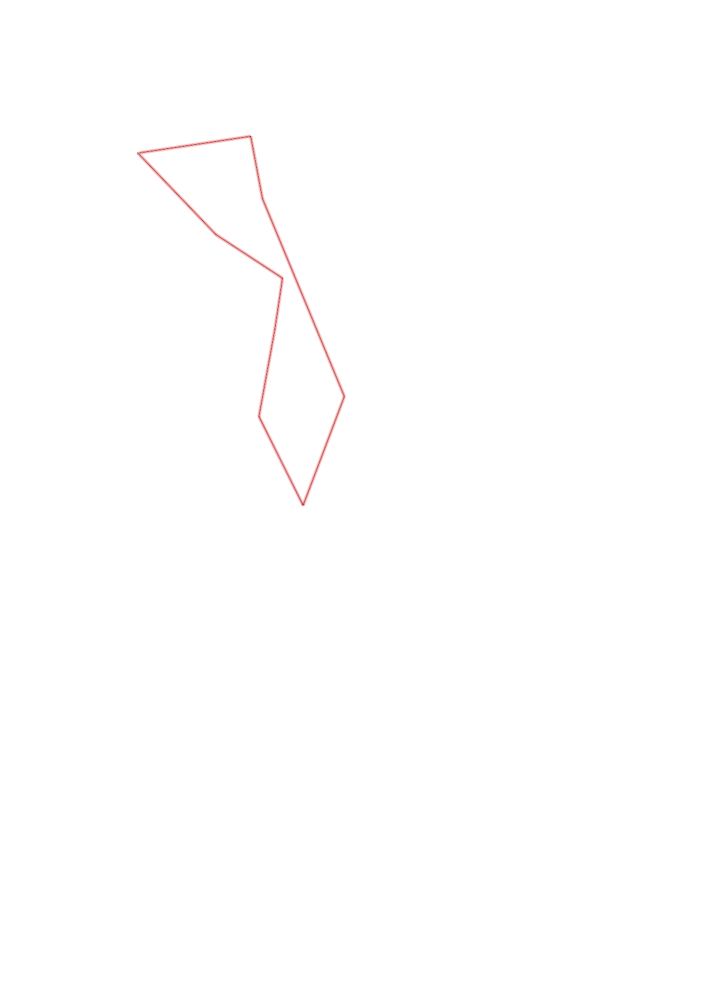

| Control |
Points |
Time Punched |
Distance |
Your Time |
Pace |
Place |
Fastest Time |
Median Time |
% Behind Fastest |
| 42 |
40 |
|
0.48 |
0:02:53 |
06:00 |
7 / 7 |
0:02:11 |
0:02:17 |
32% |
| 95 |
90 |
|
0.34 |
0:06:37 |
19:27 |
6 / 6 |
0:02:25 |
0:04:50 |
173% |
| 43 |
40 |
|
0.22 |
0:04:30 |
20:27 |
6 / 6 |
0:01:27 |
0:01:53 |
210% |
| 75 |
70 |
|
0.38 |
0:03:51 |
10:07 |
4 / 6 |
0:01:45 |
0:03:10 |
120% |
| 103 |
100 |
|
0.42 |
0:08:10 |
19:26 |
3 / 3 |
0:03:39 |
0:04:43 |
123% |
| 35 |
30 |
|
0.49 |
0:10:29 |
21:23 |
1 / 1 |
0:10:29 |
0:10:29 |
0% |
| 32 |
30 |
|
0.91 |
0:09:43 |
10:40 |
1 / 1 |
0:09:43 |
0:09:43 |
0% |
| 33 |
30 |
|
0.27 |
0:04:45 |
17:35 |
3 / 3 |
-1 day, 12:28:49 |
0:02:59 |
-99% |
| Finish |
0 |
|
0.48 |
0:03:20 |
06:56 |
1 / 2 |
0:03:20 |
0:03:50 |
0% |
Total Distance Covered: 3.99km
Points Scored: 430
Late Penalty: 0
Final Score: 430
Total Time: 0hours 54minutes 18seconds
Efficiency: 107.77 points/km
 
